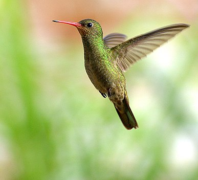

Колі́брі-сапфі́р (Hylocharis) — рід серпокрильцеподібних птахів родини колібрієвих (Trochilidae). Представники цього роду мешкають в Південній Америці
Види
Виділяють два види:
За результатами молекулярно-філогенетичного дослідження 2014 року, яке показало, що рід Hylocharis був поліфілітичним[6], низку видів, яких раніше відносили до цього роду, було переведено до родів Chrysuronia і Chlorestes.
Етимологія
Наукова назва роду Hylocharis походить від сполучення слів дав.-гр. ὑλη — ліс і χαρις — краса.
Примітки
- F. Boie. Bemerfungen ūber Species und einige ornithologische Familien und Sippen. „Isis von Oken”. 1831, ss. kol. 546, 1831
- Ch.L. Bonaparte. Conspectus trochilorum. „Revue et Magasin de Zoologie pure et Appliquée”. 2e série. 6, s. 256, 1854.
- Фесенко Г. В. Вітчизняна номенклатура птахів світу. — Кривий Ріг : ДІОНАТ, 2018. — 580 с. — ISBN 978-617-7553-34-1
- K.L. Schuchmann: Family Trochilidae (Hummingbirds). W: J. del Hoyo, A. Elliott, J. Sargatal: Handbook of the Birds of the World. Cz. 5: Barn-owls to Hummingbirds. Barcelona: Lynx Edicions, 1999, s. 590. ISBN 84-87334-25-3.
- Gill, Frank; Donsker, David (ред.). Hummingbirds. World Bird List Version 12.2. International Ornithologists' Union. Процитовано 29 серпня 2022
- McGuire, J.; Witt, C.; Remsen, J.V.; Corl, A.; Rabosky, D.; Altshuler, D.; Dudley, R. (2014). Molecular phylogenetics and the diversification of hummingbirds. Current Biology 24 (8): 910–916. doi:10.1016/j.cub.2014.03.016.
- Stiles, F.G.; Remsen, J.V. Jr.; Mcguire, J.A. (2017). The generic classification of the Trochilini (Aves: Trochilidae): reconciling taxonomy with phylogeny. Zootaxa 4353 (3): 401–424. doi:10.11646/zootaxa.4353.3.
- Jobling, James A. (2010). The Helm Dictionary of Scientific Bird Names. London: Christopher Helm. с. 197. ISBN 978-1-4081-2501-4.